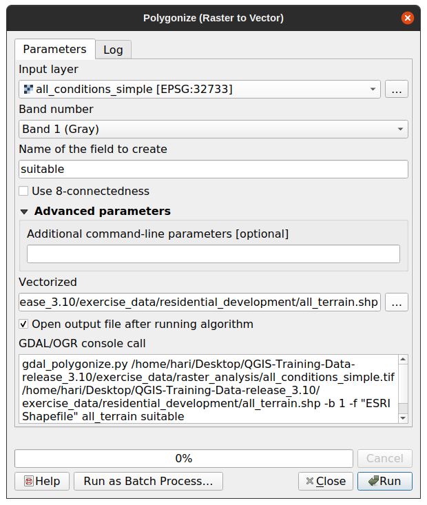

重要
翻訳は あなたが参加できる コミュニティの取り組みです。このページは現在 100.00% 翻訳されています。
8.1. レッスン: ラスタからベクタへの変換
ラスタ形式とベクタ形式の間で変換できると、GISの問題を解決するときに、またこれら二つの地理データの形式に特有の様々な解析方法を使用するときに、ラスタとベクタデータの両方を利用できます。GISの問題を解決するためのデータソースと処理方法を検討する際に、より柔軟性が上がります。
ラスタとベクタの解析を組み合わせるには、データのタイプを一方からもう一方に変換する必要があります。前のレッスンのラスタ結果をベクタに変換してみましょう。
このレッスンの目標： 解析を完了するためにラスタ結果をベクタにすること。
8.1.1. ★★☆ （中級レベル） 理解しよう: ラスタのベクタ化 ツール
最新のモジュール raster_analysis.qgs から地図を起動します 。前の練習中に all_conditions_simple.tif が計算されているはずです。
をクリックします。ツールのダイアログが表示されます。
このように設定します:
 フィールド名（ラスタの値を記述）を suitable に変更します。
レイヤを
exercise_data/residential_developmentの下にall_terrain.shpとして保存します。
これで、ラスタのすべての値を含むベクタファイルができましたが、興味があるのは適切な領域だけです。つまり、 suitable の値が 1 であるポリゴンです。このレイヤーをより明確に可視化したい場合は、スタイルを変更することができます。
8.1.2. ★★☆ （中級レベル） 自分でやってみよう:
ベクタ分析のモジュールに戻って参照ください。
suitable の値が
1であるポリゴンのみを含むベクタファイルを新規に作成します。新しいファイルを
exercise_data/residential_development/の下にsuitable_terrain.shpという名前で保存します。
答え
レイヤ パネルで all_terrain レイヤを右クリックして、 タブを選択し、 クエリビルダ を起動します。
"suitable" = 1というクエリを作ります。OK をクリックすると、この条件を満たさないポリゴンがすべてフィルタリングされます。元のラスターの上に表示すると、領域が完全に重なっているはずです:
このレイヤを保存するには、 レイヤ パネルで all_terrain レイヤを右クリックして、 Save As... を選び、指示に従って保存を続けます。
8.1.3. ★★☆ （中級レベル） 理解しよう: ベクタのラスタ化 ツール
現在の問題では不要ですが、上記で実行した変換とは逆の変換について知っておくと便利です。前の手順で作成した suitable_terrain.shp ベクタファイルをラスタに変換します。
をクリックしてツールを起動し、その後、下のスクリーンショットのようにそれを設定します:
入力レイヤ は all_terrain です。
フィールド名は suitable です。
出力ラスタサイズ単位 は ピクセル 。
幅 と 高さ は、それぞれ
837と661。all_terrain レイヤから 出力範囲 を取得します。
出力ファイル Rasterized を
exercise_data/residential_development/raster_conversion.tifに設定します。
注釈
出力画像のサイズは、ここではベクタ化された元のラスタと同じになるように指定されています。画像の大きさを表示するには、そのメタデータを開きます（ レイヤのプロパティ 中の メタデータ タブ）。
OK をクリックして変換処理を開始します。
完了したら、新たなラスタを元のものと比較することによって、その成功を測ります。両者は正確にピクセル単位で一致する必要があります。
8.1.4. 結論
ラスタとベクタ形式の間で変換すると、データの適用可能性を広げることができ、データの劣化につながる必要はありません。
8.1.5. 次は?
今はベクタ形式で利用可能な地形解析の結果がありますので、どの建物を住宅開発のために検討すべきかの問題を解決するためにそれらを使用できます。